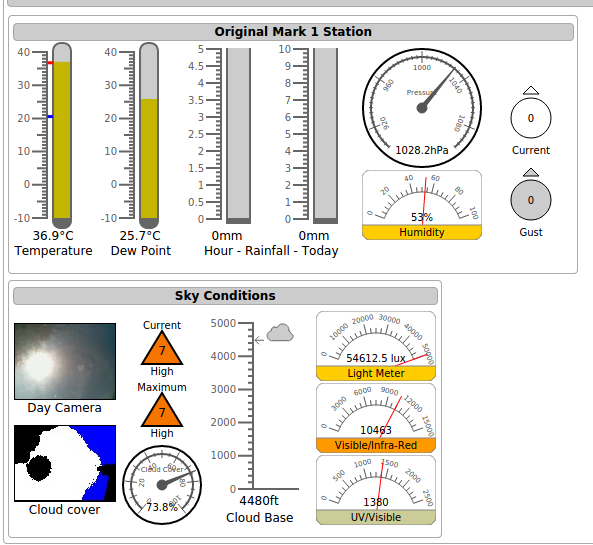

The first weather station was based on pywws as at the time I had a compatible weather station from Maplin. That ran from 2010 until March 2018 when a bird hit its sensor breaking it beyond repair.
This project first started in April 2014 when I started to build a standalone weather station based around a Raspberry PI model A which is where the project got its name from.
The original had a Wi-Fi adapter connected to it's sole USB port and a PI camera connected pointing upwards to take an all-sky view for timelapses and to calculate the amount of cloud cover.
It also had a simple board connected to the GPIO pins which had some I2C sensors attached including a light meter and a UV sensor.
